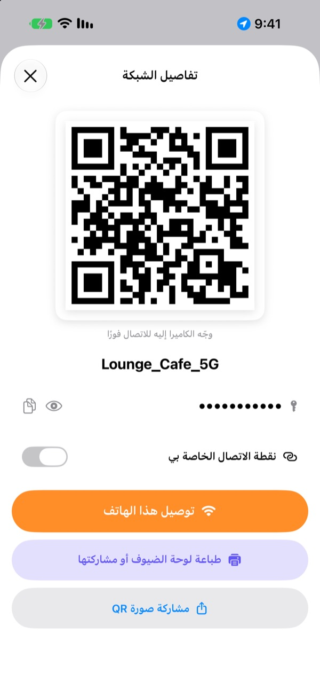
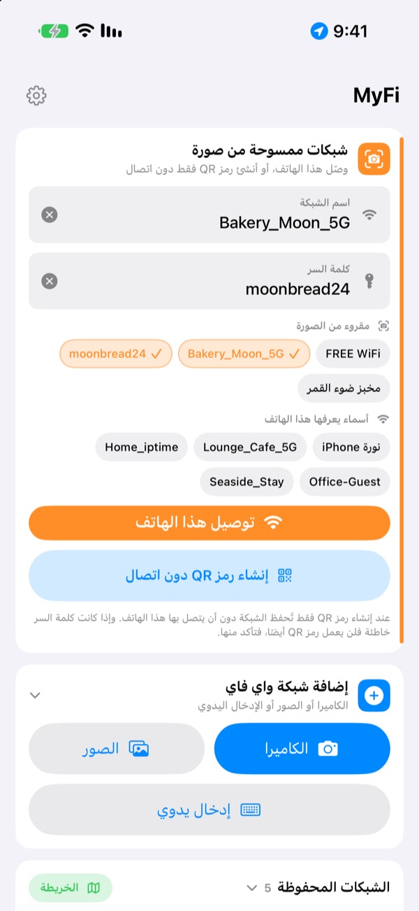
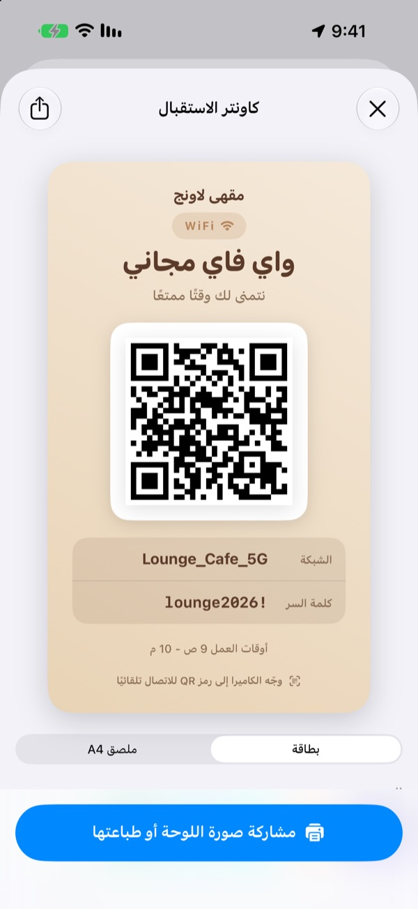
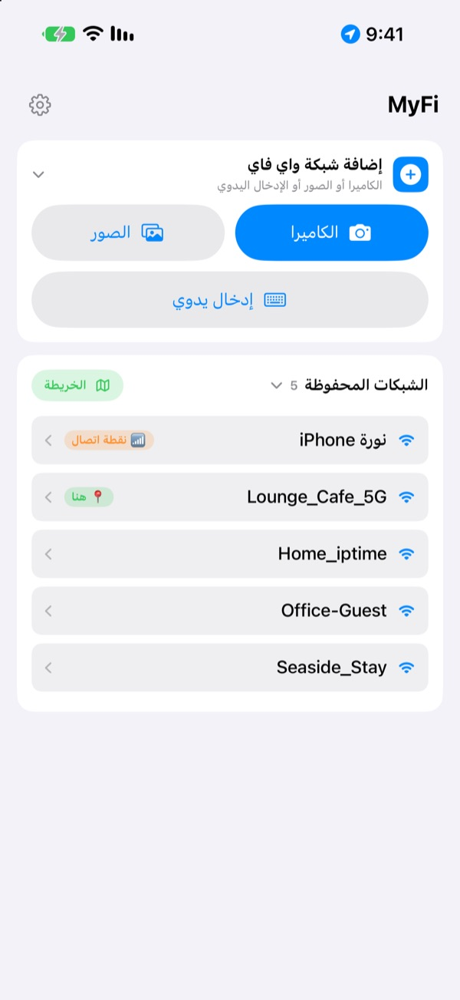

لا داعي لتهجئة كلمة السر.
اعرض رمز QR.
يوجّه أصدقاؤك الكاميرا فيتصلون فورًا. وصوّر اللوحة المعلّقة في المقهى ليتصل هذا الـ iPhone، بلا أخطاء في النسخ اليدوي.
الاتصال والمشاركة مجانيان. لأجهزة iPhone بنظام iOS 17 أو أحدث.

أنشئ رمز QR لشبكتك
غيّر اسم الشبكة أو كلمة السر وتتحدث اللوحة أثناء الكتابة. وجّه كاميرا الهاتف إليها وسيظهر لك طلب انضمام حقيقي.
«كم كلمة سر الواي فاي؟» كم مرة سمعتها اليوم؟
تمليها فتخطئ في الأحرف الكبيرة. تنسخ البطاقة المعلّقة على جدار المقهى فتخلط بين 0 وO. ثم تعيد الشرح من جديد. يحوّل MyFi كل ذلك إلى صورة واحدة ورمز QR واحد.
صوّر، وأنت متصل
التقط صورة للوحة الواي فاي أو الإيصال، أو اخترها من مكتبتك. يقرأ MyFi اسم الشبكة وكلمة السر ويوصل هذا الـ iPhone. وإن كان على اللوحة رمز QR أيضًا يقرؤه أولًا، فتأتي البيانات دقيقة.
وإذا كان النص غير واضح، اسحب جزءًا مقتطعًا من الصورة إلى خانة الاسم أو كلمة السر.

صمّم لوحة للضيوف واطبعها
اختر واحدة من 7 سمات، وأضف اسم متجرك وشعارك وأسطرًا مثل أوقات العمل. اختر بين البطاقة أو ملصق A4 عمودي، واحفظها كصورة أو اطبعها فورًا عبر AirPrint.
احتفظ بعدة لوحات، واحدة لكل فرع أو طاولة، وعدّلها متى شئت.

الأماكن التي تعود إليها تظهر أولًا
تُحفظ الشبكات التي تتصل بها أو تشاركها مع مكانها. عند عودتك تظهر تلك الشبكة في أعلى القائمة، وتجد كل الأماكن المحفوظة على خريطة.
ضع رمز QR للشبكة التي تشاركها كثيرًا على الشاشة الرئيسية أو شاشة القفل. وحين يسألك ضيف، اعرض له شاشتك فقط.

ثلاث خطوات للبدء
- 1
افتح التطبيق
يطلب إذن الموقع مرة واحدة، لأن iOS لا يشارك اسم شبكة الواي فاي الحالية إلا مع التطبيقات الحاصلة عليه.
- 2
صوّر أو اكتب
صوّر لوحة، أو أدخل كلمة سر شبكتك مرة واحدة.
- 3
اتصل أو اعرض
وصّل هذا الـ iPhone، أو اعرض رمز QR أمام كاميرا الشخص الآخر.
أين تجد كل شيء
- الاتصال من صورة لوحة
إضافة شبكة واي فايثمالكاميراأوالصورثمتوصيل هذا الهاتف- إدخال البيانات يدويًا
إضافة شبكة واي فايثمإدخال يدوي- إنشاء رمز QR فقط
إنشاء رمز QR دون اتصال- إرسال رمز QR في رسالة
- اضغط على شبكة محفوظة ثم
مشاركة صورة QR - لوحة الضيوف
- اضغط على شبكة محفوظة ثم
طباعة لوحة الضيوف أو مشاركتها - مشاركة نقطة الاتصال برمز QR
- اضغط على شبكة محفوظة وفعّل
نقطة الاتصال الخاصة بي - الاتصال أو المشاركة بسحبة واحدة
- في القائمة، اسحب لليسار للاتصال، ولليمين لمشاركة رمز QR
- عرض الأماكن المحفوظة
الخريطةبجانبالشبكات المحفوظة- رمز QR على الشاشة الرئيسية
- المس الشاشة الرئيسية مطولًا وأضف أداة
رمز QR للواي فايمن MyFi
يمكنك أيضًا فتح رمز QR مباشرة عبر Siri أو تطبيق الاختصارات.
ابدأ مجانًا، وأضف Plus أو Pro عند الحاجة
مجاني
- الاتصال بالواي فاي من صورة
- إنشاء رموز QR ومشاركتها كصور، بما فيها نقطة الاتصال
- حفظ ما يصل إلى 20 شبكة واي فاي
- لوحة ضيوف واحدة (بطاقة، سمتان) تُطبع عبر AirPrint
- بلا إعلانات وبلا تسجيل
Plus وPro
- Plus: شبكات ولوحات بلا حدود، وكل السمات السبع، واسم متجرك، وأسطر وتسميات إضافية، وملصقات A4
- Pro: كل ما في Plus، إضافة إلى أدوات QR للشاشة الرئيسية وشاشة القفل، وخريطة الأماكن التي اتصلت فيها، والاختصارات وSiri، والاستيراد من لقطة شاشة
اختر اشتراكًا أسبوعيًا أو شهريًا أو سنويًا، أو ادفع مرة واحدة مدى الحياة.
الإكراميات مجرد شكر ولا تفتح أي ميزة. وإن كنت تستخدم MyFi قبل وصول الميزات المدفوعة، فـ Pro يبقى لك.
أسئلة
لماذا عليّ كتابة كلمة السر؟
لا يسمح iOS لأي تطبيق بقراءة كلمات سر الواي فاي المحفوظة على جهازك. لذا يتعرّف MyFi على اسم الشبكة وتُدخل كلمة السر مرة واحدة، ثم يستخدم المحفوظة بعد ذلك.
لا يظهر اسم الشبكة التي أتصل بها.
لا يعطي iOS اسم الشبكة إلا للتطبيقات التي لديها إذن الموقع. اسمح لـ MyFi من الإعدادات › الخصوصية والأمن › خدمات الموقع. يُستخدم الموقع فقط لقراءة اسم الشبكة ولمعرفة الأماكن التي تعود إليها.
قرأ الاسم أو كلمة السر بشكل خاطئ.
اقترب أكثر وأبقِ الصورة مستقيمة. وإن بقي الخطأ، اسحب الجزء الصحيح من الصورة إلى الخانة أو صحّحه يدويًا. وإن كان على اللوحة رمز QR للواي فاي، يقرؤه MyFi ويملأ البيانات بدقة.
ما اللوحات التي يستطيع قراءتها؟
يعمل بأفضل شكل مع اللوحات المكتوبة بالإنجليزية أو الكورية، مثل ID وPW وSSID وNetwork وPassword. ولا يقرأ التسميات العربية بعد، لكنه حتى دون تسميات يلتقط السطر الذي يشبه كلمة السر. أما رمز QR للواي فاي على اللوحة فيُقرأ بدقة أيًا كانت اللغة.
كيف يتصل أحدهم برمز QR الخاص بي؟
على iPhone أو Android، يوجّه الكاميرا المدمجة إليه ثم يضغط على طلب الانضمام. لا يحتاج إلى أي تطبيق.
هل يرى الآخرون كلمة السر؟
يحمل رمز QR بيانات الدخول القياسية للواي فاي. أنت من يقرر دائمًا مشاركته، ويمكنك إخفاء كلمة السر على لوحة الضيوف.
لماذا لا أستطيع الاتصال بنقطة الاتصال الخاصة بي؟
نقطة الاتصال الشخصية في iPhone هي هذا الهاتف نفسه، فلا يمكنه الانضمام إليها. فعّل نقطة الاتصال الخاصة بي ليعاملها MyFi كرمز QR تعطيه للآخرين.
أين تذهب بيانات الواي فاي الخاصة بي؟
ليس لدى MyFi خادم. تُعالج أسماء الشبكات وكلمات السر ونتائج الصور والمواقع وتُحفظ على جهازك فقط. لا إعلانات ولا أدوات تتبع. يرسل التطبيق فقط إحصاءات استخدام مجهولة وتقارير أخطاء إلى iCloud من Apple للمساعدة في إصلاحه.
على أي أجهزة يعمل؟
على iPhone بنظام iOS 17 أو أحدث. والتطبيق متاح بـ 25 لغة.
أسئلة أو ملاحظات؟ راسلني على leeo@kakao.com. أرد عادةً خلال يومين إلى ثلاثة أيام.